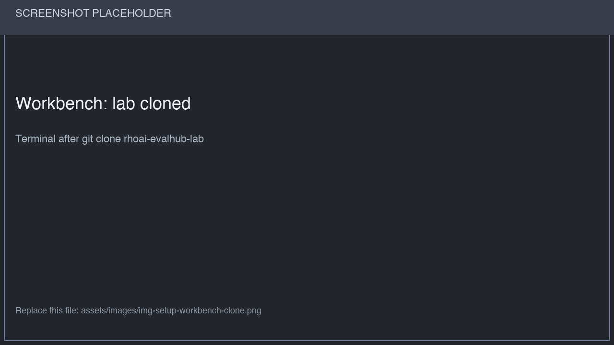
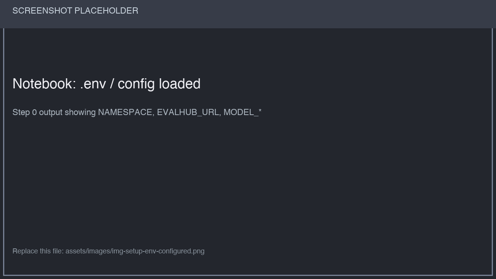
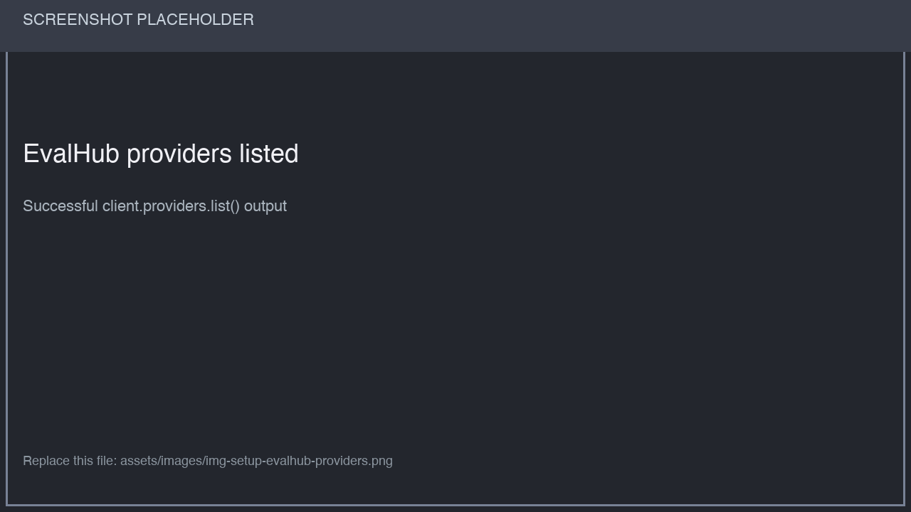
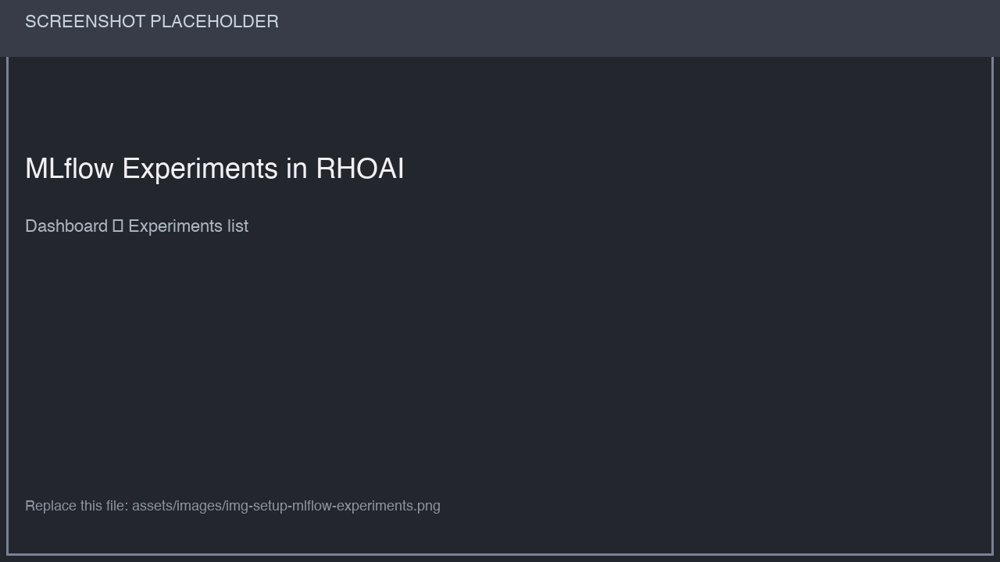

Setup EvalHub and MLflow
In this module you prepare the workbench, configure the model, EvalHub, and MLflow connections in .env, and verify connectivity with the setup notebook. EvalHub and MLflow must already be deployed, with access to your assigned project configured by your instructor.
Learning Objectives
-
Clone the EvalHub lab into your workbench
-
Collect the connection settings in Web Terminal and apply them to
.envtogether -
Verify EvalHub API reachability with the Python SDK
Exercise: Run the Setup Notebook
|
Complete Step 2.1 below before opening the notebook. Then run Step 0: Load Configuration and continue through the setup notebook as directed by your instructor. Workbench path (after clone)::
|
Step 2.1: Collect and Apply the Environment
A. Web Terminal: Generate the Complete .env Block
Open the Web Terminal from the terminal icon in the OpenShift console. Run all oc commands in this module in Web Terminal. Use the Workbench terminal later to clone the lab, install Python dependencies, and create .env.
Run the command below once in Web Terminal. It downloads and runs the workshop setup script, which prompts for four values:
-
Your assigned lab namespace:
user1,user2,user3, and so on. Use your actual assigned namespace, regardless of Web Terminal’s current project (openshift-terminal). -
The exact served
MODEL_NAME, from the deployed model details or MaaS model catalog. The display name may differ from the API’s model ID. -
The OpenAI-compatible
MODEL_ENDPOINT, from the model details or MaaS connection information. Keep the routing path and supplied/v1suffix; omit/chat/completionsand do not uselocalhost. -
The
MODEL_API_KEYissued for that endpoint, without the `Bearer ` prefix. Input is hidden. Press Enter to leave it empty only if the endpoint allows unauthenticated requests.
The script retrieves EvalHub URL, your current OpenShift token, and MLflow tracking URI together, then prints all seven .env variables. It reads cluster resources and does not change them.
This lab hosts the shared EvalHub and MLflow services in redhat-ods-applications. The script looks for the resource/service named evalhub and the HTTPS service named mlflow in that namespace by default. The internal HTTPS service port is 8443.
NAMESPACE remains your assigned evaluation tenant (user1, user2, user3, …), even though the services run in redhat-ods-applications. If your instructor deploys either service elsewhere, export EVALHUB_NAMESPACE or MLFLOW_NAMESPACE with its deployment namespace before running the command. Do not change NAMESPACE to the shared services namespace.
(
set -o pipefail
curl -fsSL https://raw.githubusercontent.com/hyogrin/rhoai-basic-evalhub-workshop/refs/heads/main/scripts/setup-env.sh | bash
)The script reads prompts from the terminal so they work with curl | bash. curl -fsSL follows redirects, reports download errors, and rejects HTTP error responses; pipefail also makes a failed download fail the entire command. Keep the surrounding parentheses so this setting applies only to this command. The script checks for an interactive terminal, oc, and an authenticated OpenShift user before collecting configuration.
You can inspect the setup script source before running it.
The output contains your assigned namespace, three model settings, and three discovered connection settings, with literal values ready to paste. For example:
NAMESPACE='user1'
MODEL_NAME='your-served-model-id'
MODEL_ENDPOINT='https://your-model-endpoint.example.com/v1'
MODEL_API_KEY='your-model-api-key'
EVALHUB_URL='https://evalhub.redhat-ods-applications.svc.cluster.local:8443'
EVALHUB_AUTH_TOKEN='your-current-openshift-token'
MLFLOW_TRACKING_URI='https://mlflow.redhat-ods-applications.svc:8443'Use your actual generated output. EvalHub may use an internal service URL instead of a route; both are valid when reachable from the Workbench. The EvalHub URL must not end in /api/v1. Keep any path such as /mlflow in the discovered MLflow URI.
If the script reports Forbidden, a missing resource, or a missing service port, ask your instructor to verify access and the deployment names. It stops before printing a complete .env block when a required lookup fails. If the token later expires or access returns HTTP 401, rerun this same block in Web Terminal and replace the saved configuration. HTTP 403 can indicate insufficient tenant permissions.
B. Workbench: Create .env with vi
Open your Workbench terminal and run:
git clone https://github.com/hyogrin/rhoai-evalhub-lab.git
cd rhoai-evalhub-lab
python -m pip install -q -r requirements.txt
In the same Workbench terminal, create .env in the rhoai-evalhub-lab directory:
vi .env-
If
.envalready contains text, pressEscand typeggdGto clear its contents. -
Press
ito enter insert mode. -
Paste the seven generated assignment lines from Web Terminal.
-
Press
Esc, type:wq, and pressEnterto save the file and exit.
This applies the namespace, model, EvalHub, and MLflow settings together. The same .env file is used by Modules 2-5.
|
Copy the printed values, including the actual The generated block contains credentials. Keep it in |
The instructor must provision EvalHub, the project’s MLflow workspace and artifact storage, and the required notebook identity permissions. The current lab notebooks can still invoke oc internally for cluster setup and model Secret management; copying EVALHUB_AUTH_TOKEN authenticates SDK requests and does not establish a Workbench CLI login. When a model key is set, the notebook identity needs permission to manage the model-api-key Secret in your assigned namespace.
C. Workbench: Load and Verify
Open 0_setup/1_eval_hub_setup.ipynb and run Step 0: Load Configuration, then continue through the participant cells as directed by your instructor. Keep notebooks in their original subdirectories: the configuration cell reads ../.env.
Check that the output shows your assigned namespace (user1, user2, user3, …), model endpoint, EvalHub URL, and MLflow URI. The token is supplied explicitly by .env.
After replacing .env, restart the kernel of each open benchmark notebook and rerun its configuration cell so previously loaded values are replaced.
|
The workshop template covers the seven connection variables for Modules 2-5. |

Step 2.2: What the Notebook Configures
The participant cells load the saved configuration and check that EvalHub responds. The example below requires the namespace and token collected in Web Terminal:
import os
from dotenv import load_dotenv
from evalhub import SyncEvalHubClient
load_dotenv(dotenv_path="../.env", override=True)
EVALHUB_URL = os.getenv("EVALHUB_URL")
EVALHUB_AUTH_TOKEN = os.getenv("EVALHUB_AUTH_TOKEN")
NAMESPACE = os.getenv("NAMESPACE", "").strip()
if not NAMESPACE:
raise ValueError(
"Set NAMESPACE in ../.env to your assigned namespace (user1, user2, user3, ...)."
)
if not EVALHUB_URL or not EVALHUB_AUTH_TOKEN:
raise ValueError(
"Paste the complete configuration generated in Web Terminal into ../.env."
)
client = SyncEvalHubClient(
base_url=EVALHUB_URL,
auth_token=EVALHUB_AUTH_TOKEN,
insecure=True,
tenant=NAMESPACE,
)
# Connectivity check -- list providers / health as the notebook does
providers = client.providers.list()
print(f"Providers available: {len(providers)}")
|
Workshop participants usually receive a pre-deployed EvalHub + MLflow. Cluster owners can use the same lab repo docs and sample manifests under |
Verify
-
In the OpenShift AI dashboard, open Experiments under MLflow and confirm you can list experiments for your project.

-
From the notebook output, confirm EvalHub URL and auth succeeded (no HTTP 401/404 on provider listing).
When setup succeeds, proceed to Module 3 to submit your first performance job.